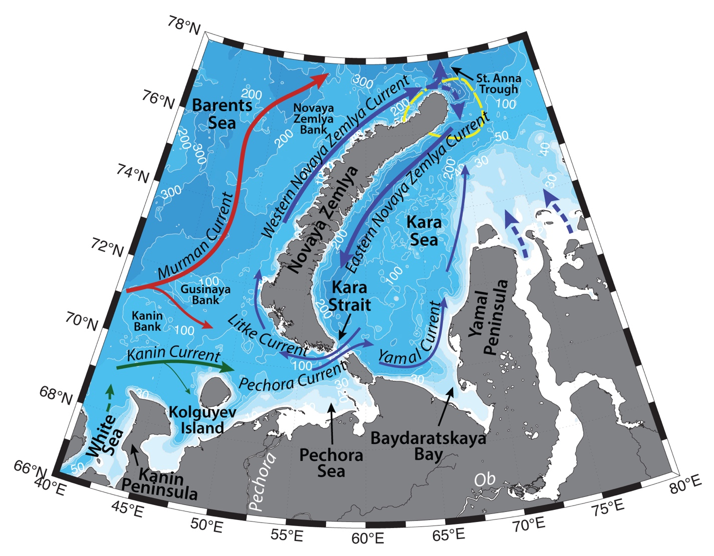

Schematic water circulation patterns and geographical place names in the Novaya Zemlya region. Dashed line marks the studied region.
Hydrography of the Northern Novaya Zemlya region is influenced by the inflow of Barents and Kara seas waters, Atlantic Water advection and transformation, water exchange with the deep Arctic Basin, seasonal sea ice cover, as well as freshwater runoff from the archipelago and complicated topography (shallow Barents Shelf, fjords of the archipelago and St. Anna Trough). All the currents on the Barents Shelf are prone to large seasonal and synoptic variability under the influence of atmospheric forcing.
Murman Coastal Current brings modified Atlantic Water (AW; with T>3°C, S>35 in the Norwegian Current; e.g. Loeng, 1991, Dalpadado et al., 2003) from the Norwegian coast to the Novaya Zemlya. AW is getting transformed on the Gusinaya, Novaya Zemlya, and Kanin banks, by getting fresher and colder and turns to the northeast, where exits the Barents Shelf via St. Anna Trough to the north of Novaya Zemlya archipelago (e.g. Ozhigin et al., 2000; Boitsov et al., 2012; Shauer et al, 2002).
Some volume of Atlantic Water flows eastwards along the coast, transformed by the mixing with coastal waters (e.g. fresh waters of the White Sea), and proceeds with Pechora Current into the Kara and Yugor straits on their southern sides (with mean transport of 0.3 Sv eastwards; Maslowski et al., 2004). Further this current is known as Yamal Current, that carries modified Barents Sea water (e.g. T=~3.9 °C, S = 23 – 28; Johnson et al., 1997; Pivovarov et al., 2003) across the Kara Sea. Recent studies (e.g. Johnson et al., 1997; McClimans et al., 2000; Zatsepin et al., 2010) suggest, that upon entering Kara Sea, main part of the Yamal current turns seawards away from the Yamal coast to the northeast and flows along the eastern coast of Novaya Zemlya up to its northern end. Some volume of Atlantic Water may also get onto the Barents Shelf via upwelling in the canyons and troughs – e.g. St. Anna Trough.
Western Novaya Zemlya Current is topographically steered above Novaya Zemlya Shelf northwards along the coast of the archipelago. It carries Novaya Zemlya Coastal Water (-1.8<T<6°C, 33<S<34.7), which is a mixture of modified AW from the Murman Coastal Current, locally formed Barents Sea Water, freshwater runoff from the archipelago and waters of Litke Current (cold and fresh waters of the Kara Sea advected through the Kara Strait; Ozhigin et al., 2000). Eastern Novaya Zemlya Current is a continuation of the Western Novaya Zemlya Current, which flows around Novaya Zemlya from the north and then turns to the southwest along the eastern slope of Novaya Zemlya (Zatsepin, et al., 2010). Yamal current is thought to contribute to the Eastern Novaya Zemlya Current too.
To the north of Novaya Zemlya, a sharp hydrographic front is distinguishable between the waters from Barents Sea (of local and Atlantic origin) and fresher waters of Kara Sea. Recent studies (e.g. Johnson et al., 1997; McClimans et al., 2000; Zatsepin et al., 2010) suggest, that the freshwater runoff of the Ob and Yenisei rivers can form an anticyclonic gyre near the mouths of the rivers and north of them with intensification of the northeastern transport at its western periphery; part of the waters of this gyre merges with the northeasterly current along the coast of Novaya Zemlya. Despite this, the precise current pathways and variability of the circulation and hydrology of the Kara Sea still need more investigation (e.g. Zatsepin et al., 2010). Currents also strongly depend on the freshwater runoff and the water exchange through the straits with the neighboring seas and the Arctic Ocean, and wind forcing is one of the most important factors influencing the circulation of the shallow Arctic shelf seas (e.g. Zatsepin et al., 2010; Harms and Karcher, 1999).
Cold and dense Barents Sea Water (BSW; -1.9<T<5°C, 34.5<S<35.2), forms on the northeastern Barents Shelf via winter cooling and salinization due to the brine rejection during ice formation, especially on the banks (e.g. on Novaya Zemlya Bank) of the sea, as well as in leads and flaw polynyas. It is known to flow from the shelf into the Arctic Basin through St. Anna Trough, or occupy the deepest parts of the sea, where it is known as Bottom Barents Sea Water (Midttun L., 1985; Lien & Trofimov, 2013).
Cold and fresh Arctic Surface waters (T<0°C, 31<S<34.2), originated from the ice melt, enter the region from the north. During summertime depending on the atmospheric situation, Arctic Water can be warmed up to 5 °C. Summertime melting of the glaciers freshen the waters in the fjords and influence their hydrochemical structure (Ozhigin et al., 2000).
Ice formation (including land fast ice around the archipelago) and its mobility in the Barents Sea are prone to large variability under the influence of atmospheric forcing and the Atlantic inflow. Ice usually starts to freeze up to the north of Novaya Zemlya in September, and reaches maximum thickness of 130–150 cm by the end of winter. In April ice starts to retreat from south to north. Polynyas in the Barents Sea usually form along the Novaya Zemlya coast (e.g. Severo-Novozemelskaya polynya – a part of North-East Passage; Bardan, Korneeva, 2004; Winsor, Bjork, 2000). Icebergs can form from the glaciers of Novaya Zemlya and Franz Josef Land. In the recent years of warming Arctic, the reduction of ice cover in the Barents Sea would lead to more direct atmospheric cooling of the AW during wintertime, and less freshwater input from ice melt (Lien & Trofimov, 2013).
Local frontal zones may form between the mentioned water masses. While frontal zones can limit the propagation of various waters, mesoscale eddies and other turbulent features can be spawned from the region as a result of the interaction of different currents, providing favorable conditions for biological diversity and productivity of the region (Zatsepin et al., 2010).